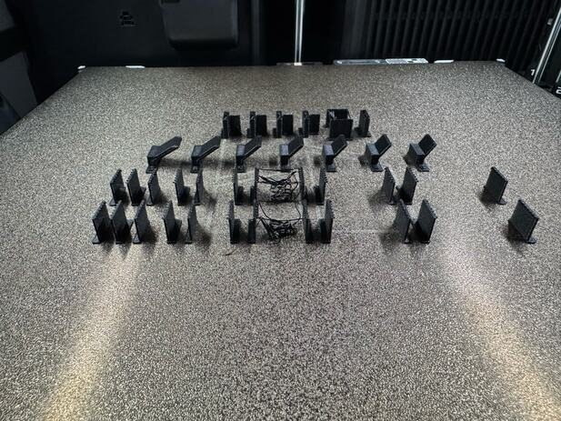

First layer · the plate’s edge
Season the edge, or stay off it.
Small parts are printed in the middle of the plate, so the middle gets used and the last few centimetres at the edge do not. PET-GF held on the used part of a textured plate and let go where nothing had been printed. A part that fills the bed finds that out in its first layer.
Seen in black PET-GF · Mark2’s textured PEI · left 0.4 mm nozzle · 20 September, 4 October and 10 October 2026Not tried in: Mark 1. On 6 October 2026 the rule also stopped clear PETG on Mark2’s textured PEI (left 0.8 mm), and no failure was named
20 September 2026: a bench stand as big as the nozzle can reach, 5 mm from the edge. Two clumps on the nozzle, then a peel on a fresh hotend. Pulled in to 15 mm: “It was lifting already.”
Back at the edge without our trim, so the nozzle ran lower. It pressed flat and held, rough at the right edge and the front left. Derek stopped it and peeled it off.
The file of the third send, on the same hotend. The first layer went down “clean and uniform out to the plate’s edge”, and the print ran all 917 layers.
The cold-core shell keeps every road {{petgf-setup-pieces:/pieces/foam-shell/plate_border_mm}} mm in from the edge. Small test plates are centred {{petgf-setup-pieces:/pieces/pump-snap-cap/plate_border_mm}} mm in. Both are measured on the sliced paths, brim and supports included.

“The seasoning worked. I mean even if it fails after this there is still a very obvious effect so far!”
What seasoned means. A place on the plate where PET-GF has been printed before. The record says nothing more exact.
Two weeks later. “On mark2 you had pieces close to the edge that did not get a good first layer, so that plate is not well seasoned there yet. We could keep printing until it works, or you could avoid going that far to the edge here.” (4 October 2026, black PET-GF, nearest road 15.5 mm in.)
The one time it was not PET-GF. On 6 October 2026 the rule stopped a plate of clear PETG on Mark2’s textured plate, its nearest piece 17.5 mm in: “You can’t print that close to the edge of the bed on a plate that hasn’t been seasoned properly first.” The margins we keep come from that message. The record names no piece that failed that day, and PETG has since moved to a glued smooth plate.
In the record
The six sends · The stand, and its seasoning layer · 4 October · 6 October · The margins
Still openNobody has looked at what a first layer leaves on the plate, so why this works is not known. The plates are not marked and there is no map of where each has been printed on. The stand reached to 5 mm from Mark2’s edge on 21 September, and on 4 October an edge on Mark2 would not hold: the record cannot say whether that was another plate or whether seasoning wears off.